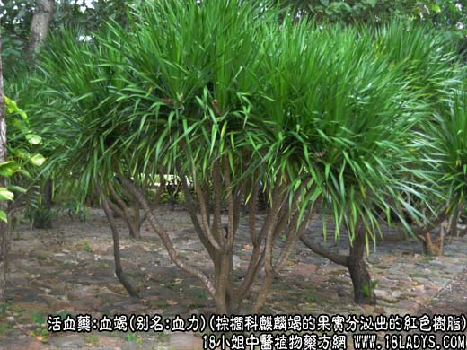
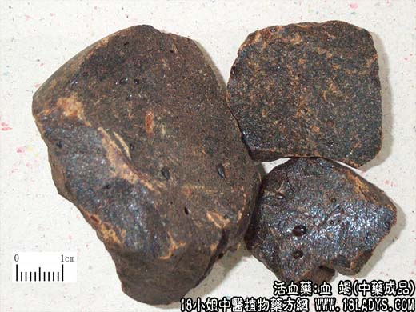
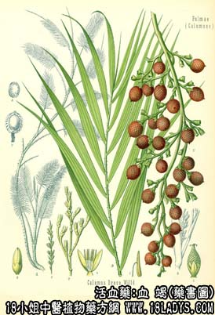

血竭为少常用中药，始载《唐本草》，原名“麒麟竭”。血竭之名始见于《图经本草》。
别名：血竭花、血力。
来源：为棕榈科常绿藤本植物麒麟竭的果实成熟时分泌出的红色树脂。均为进口。
产地：主产于印尼、马拉西亚、索马里等地。
采收加工：果实大如樱桃，其外密被硬质鳞片，鳞片间分泌出的红色树脂，几乎将鳞片全部遮蔽。采集果实，充分晒干（干燥后的树脂甚松脆），如贝壳同入笼中强力振摇，使松脆的树脂与果实分离，而后筛去果实与鳞片等杂质，用布包起，入热水中，使软化成团状，取出放冷即可。
性状鉴别：血竭分原庄血竭两类。
1、原庄血竭：呈不规则的块状。表面紫红色或被有深红色粉尘。质坚脆或松脆、易碎裂，破碎面内色与表色一致，微有光泽。因品质不一，常含有多少不等的花序，果实及鳞片等杂质气无，味淡。
以含杂质少，体松脆、断面黑亮、色红者为佳。
2、牌号血竭：现市售商品有手牌和皇冠牌，均系经过加工再制的成品，花序、果实及鳞片等杂质已被清除，并做成定型的团块状。直径6~8厘米，底部平圆，顶部呈钝角四楞形并有纵顺皱褶沟梭。表面暗红色或黑红色，并印有金印牌号。质坚硬脆，易砸碎，断碎面微有光泽及细孔，红褐色。研粉则成鲜艳的深红色。气无，味淡。嚼之有砂砾感。
以外色黑红似铁，断面黑亮，研粉鲜红似血者为佳。
主要成分：含血竭红素、安息香酸等。
功效与作用：止血止痛，活血生肌。动物实验证实能显著缩短家兔血浆再钙化时间。对多种皮肤癣有抑制作用。
炮制：研细粉生用。
性味：甘、咸、平。
归经：入心、肝经。
功能：活血止痛，散瘀生新；外用止血生肌。
主治：跌打损伤，瘀血作痛，心腹卒痛，金疮出血，疮疡不敛等症。
临床应用：主要用于跌打损伤而有心腹疼痛或出血者，常配乳香、没药、儿茶、冰片等，方如七厘散，此方有活血化瘀、消肿止痛作用。
血竭性较辛热而燥热，阴虚血热者慎用。
用量：内服1~1.5g，一般入丸散剂，不入汤剂。外用适量。
处方举例：七厘散（成药）：含血竭、红花、儿茶、朱砂、乳香、没药、麝香。每服0.21~0.9g，每日1~3次，用温开水或温黄酒送服，也可外用，以白酒调敷患处。
注：1、血竭溶于醇，不溶于水。
2、传统的鉴别方法，将血竭研成细粉，撒在纸上，以微火烘烤、勿使纸焦，血竭熔化后呈黑红色，对光透视，仍显鲜红色。用火点燃无松香气味、烟有呛鼻感者，品质好。反之则次，或掺有其它树脂。